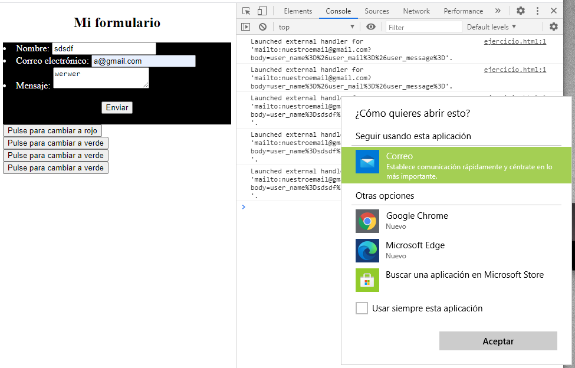

Enunciado
A continuación, deberá crear un formulario con los siguientes requisitos:
- Un título que ponga Caso práctico 5.
- Un título h2 que ponga mi formulario.
- Deberá crear un formulario con los campos nombre, email y mensaje.
- Deberá crear un botón submit.
- El formulario deberá enviarse con los datos en segundo plano a su email.
- Deberá crear tres botones que cambie el color de fondo, solo y únicamente, del formulario. Los colores serán morado, verde, negro y blanco.
- Cuando el fondo del formulario cambie de color, las letras, únicamente, del formulario deberán cambiar a color blanco. Sin embargo, cuando el fondo del formulario cambie a blanco, las letras deberán cambiar a negro como estaban por defecto.
- El botón enviar deberá estar dentro del propio formulario y alineado en el centro
- Los botones que cambian el fondo deberán estar aparte del formulario.
Importante. Deberá usar los estándares actualizados, es decir, no se permite usar ni bgColor, ni fgColor.
Además, para saber que el botón enviar funciona, al pulsarlo deberá salir lo siguiente y el formulario deberá tener el siguiente resultado estético:
Actividad asociada al CE2.2 y CE2.3
CE2.2 Identificar los objetos predefinidos por el lenguaje de guion para manejar nuevas estructuras y utilidades que añadirán nuevas funcionalidades a las páginas, de acuerdo a las especificaciones técnicas del lenguaje.
CE2.3 Describir e identificar los objetos del documento que permiten añadir interactividad entre el usuario y el script, así como sus propiedades y métodos.
Solución
Actividad asociada al CE2.2 y CE2.3
En el código proporcionado, se utilizan los siguientes objetos predefinidos en JavaScript:
- document: Es un objeto predefinido que representa el documento HTML cargado en el navegador. Permite acceder y manipular los elementos del documento, como obtener elementos por su identificador (getElementById).
- form: Es un objeto que representa un formulario HTML. En este caso, se obtiene el formulario mediante document.getElementById("formulario"), lo que implica que existe un elemento con el identificador "formulario" en el documento HTML.
- form.style: Es una propiedad del objeto form que proporciona acceso a las propiedades de estilo CSS del formulario. Permite modificar las propiedades de estilo, como el color de fondo (backgroundColor) y el color de texto (color).
- switch: Es una estructura de control que permite evaluar diferentes casos y ejecutar el código correspondiente según el valor de una expresión. En este caso, se utiliza para evaluar el valor de la variable color y modificar el estilo del formulario en función del caso.